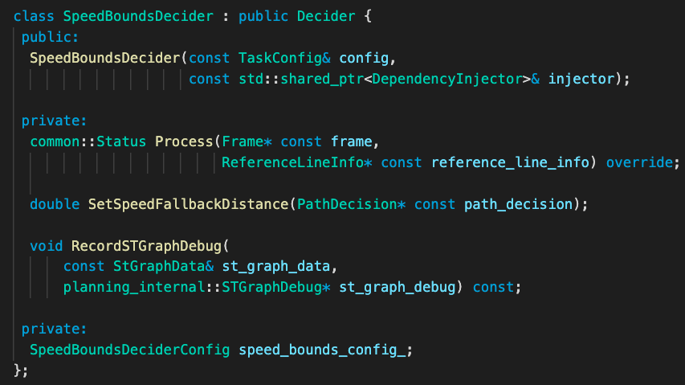

Planning Speed Bounds Decider Introduction¶
Introduction¶
This document describes the process of speed bounds decider. Speed bounds decider contains three main parts: 1.Map obstacles into st graph 2.Create speed limit along path 3.Get path_length & time_duration as search bound in st graph. After these three steps, generated st_graph is loaded back to the frame.
Where is the code¶
Please refer code
Code Reading¶

SpeedBoundsDecider is a derived class whose base class is Decider. Thus, when task::Execute() is called in the task list, the Process() in SpeedBoundsDecider is actually doing the processing.
Input. While the input params of the unified api are frame and reference_line_info, the information needed to caculate st_graph includes PathData/ReferenceLine/PathDecision and PlanningStartPoint from frame.
Process.
2.1 Map obstacles into st graph
if (boundary_mapper.ComputeSTBoundary(path_decision).code() == ErrorCode::PLANNING_ERROR) {}Here it goes through every obstacle to generate ST graph. Specifically, this function will fine-tune boundary if longitudinal decision has been made. After that each st_boundary of obstacles is pushed in to a boundaries vector.2.2 Create speed limit along path
if (!speed_limit_decider.GetSpeedLimits(path_decision->obstacles(), &speed_limit).ok())Here it goes through every discretized path point and find a speed_limit for it. In every cycle, the basic speed are limited by map/path_curvature/nudge obstacles. For nudge obstacles, each item is went through to find the closest obstacle.2.3 Get path_length and time_duration as search bound in st_graph The time duration is from speed bound config.
Output.
st_graph_data->LoadData()The boundaries/speed_limit are stored in st_graph_data of reference_line_info.